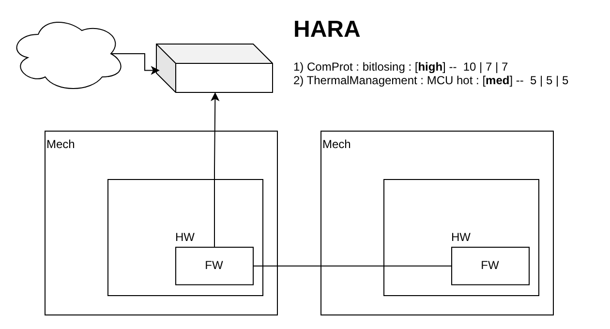
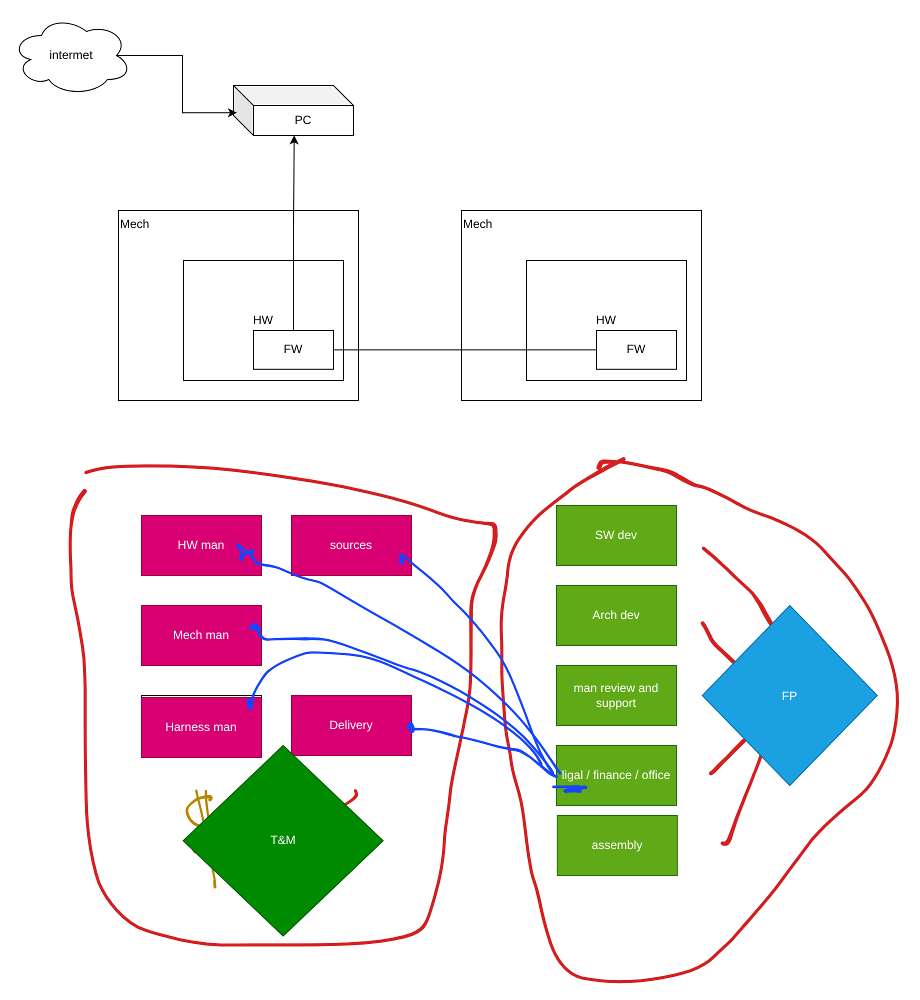
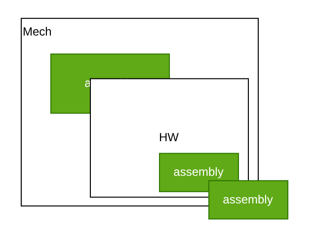
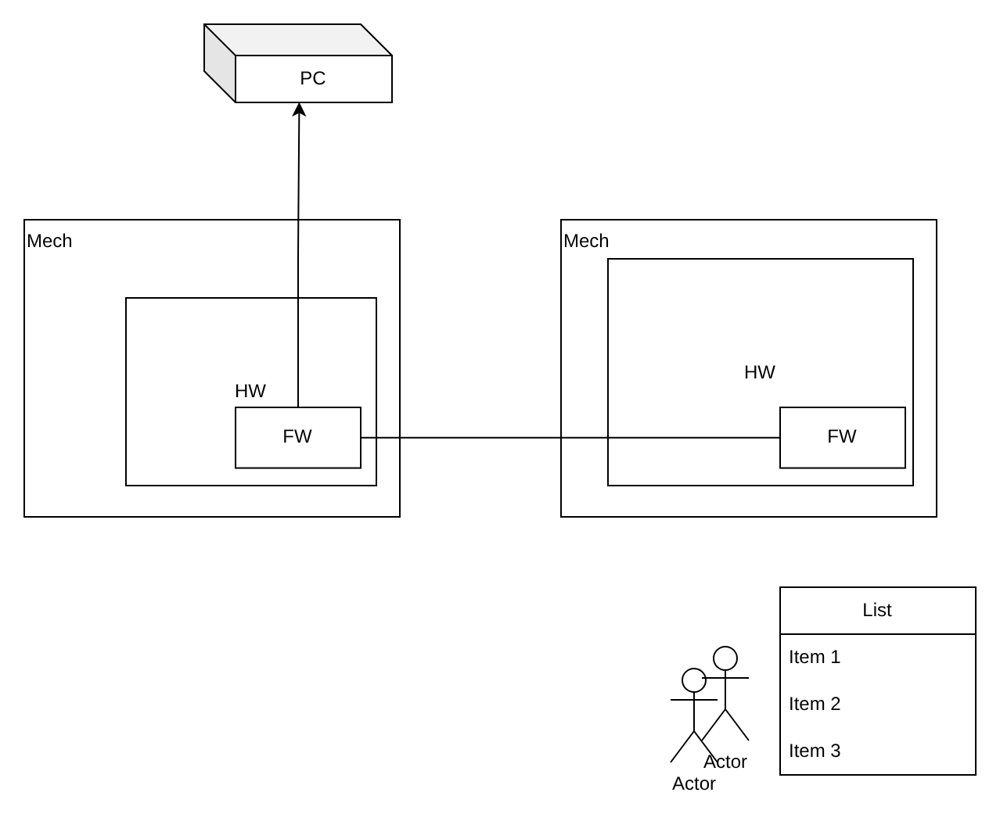

Teaching / Session 14 · 28 Oct 2026
HARA for the PoC, a Hybrid Contract and the First Epic Plan
What goes into a PoC and how a HARA decides it, Fixed Price for in-house engineering and T&M for vendors, three levels of assembly, and a 29-step EPIC 1 plan with gates G1–G4.
28.10.2026Session 14 / 1401:34:00Practical session
Course chronology
Engineering notes
What goes into a PoC and how a HARA decides it, Fixed Price for in-house engineering and T&M for vendors, three levels of assembly, and a 29-step EPIC 1 plan with gates G1–G4.
In-house FP, vendors T&M
Assembly in three levels
EPIC 1 plan with four gates
Full session notes
Full session notes
Complete English teaching notes derived from the Ukrainian transcript of 28 October, the lecturer’s draw.io diagram and his Excel plan. Supplier experience is the lecturer’s own practice, given without company names.
Session 14. HARA for the PoC, a hybrid contract and a detailed plan for the first epic
28 October 2026 · Practical session · 1 h 34 min. Based on the automatic transcript
IgorSikorskyKPI_28102026.mp4, together with the draw.io diagram and Excel plan the lecturer built during the session. This is an edited teaching note, not a verbatim transcript: obvious recognition errors were corrected and terminology was aligned with earlier sessions. Experience with manufacturers and suppliers is the lecturer’s personal practice, given without company names. Editorial additions are marked separately.
0. Organisation
- The session is recorded; the video and the automatic transcript are available to students for their notes.
- The lecturer uploaded the working diagram file to Google Drive; after the course the materials will be placed on his server with a link on the website.
- A methodological guide is planned as an outcome of the course.
- Safety reminder: in case of an air-raid alert, be careful and look after your own safety.
1. Recap: phases, gates and the cone of uncertainty
Session 13 described how to present a way of work to the customer: split the project into phases 1, 2, 3 … N, say that you are open to continuing (support, decommissioning, etc.) and honestly show at least two gates. A gate is an exit point:
- R&D succeeded — we move on to the PoC;
- it failed — the gate lets you drop out quickly at an early stage with minimal loss of time and money for both sides;
- or you find another concept and go back to the start for attempt no. 2, no. 3.
Depending on the type of project, at least do not forget about R&D and a PoC. R&D checks technical feasibility with the current state of science and technology: if the answer is no, you must look for other science or technology or wait until it matures. R&D also narrows the cone of uncertainty: the further ahead an event, the more assumptions you make and the harder it is to estimate what you can deliver, what it will cost and how long it will take. This too must be communicated to the customer during R&D.
2. What a PoC gives you: the right choice of tools
After a successful R&D phase, propose a Proof of Concept to the customer. The focus of a PoC is not on looks or on finishing the product, but on validating your choices:
| What the PoC checks | Example |
|---|---|
| Component base | The chosen chip really works with AI; a DSP processes 10 video streams from 10 cameras in parallel without excessive latency |
| Framework | Whether it offers enough tooling for the task |
| Programming language | Whether it is functionally safe enough and well supported |
| Operating system | Whether a proper compiler exists for it — otherwise you will have to rewrite tonnes of existing code |
The risk of skipping a PoC is enormous: you design in a chip, buy it, develop electronics, an enclosure and a cooling system around it — and then it "does not cope". A PoC costs money, but it removes large future risks in your choice of tools.
3. What exactly goes into the PoC: HARA
A project can be large: your own hardware (PCBs), firmware running on it, mechanics (the enclosure) everything is built into, a communication protocol between devices, a desktop part, the cloud. The teaching topology: two physical devices in two enclosures, each with its own electronics, chips and firmware; a protocol between them; one firmware acts as master, and a separate computer works as a gateway that forwards data to and from the cloud.


The PoC takes on the scariest parts — where you could "hit the post". To find them, run a HARA — Hazard Analysis and Risk Assessment. All engineers get together (preferably in person) and analyse what could happen to the system: where you are unsure, what you have never done, where you will be pioneers.
Example from the session:
| # | Item | Hazard | Scores | Level |
|---|---|---|---|---|
| 1 | Communication protocol | Bit loss; a protocol failure "kills everything" | severity 10, frequency 7 (statistics and the engineers’ experience), impact 7 | high |
| 2 | Enclosure thermal management | The mechanical engineer is not sure the "hot" MCU will not overheat | 5, 5, 5 | medium |
You take the HARA results to the customer: "Within the PoC we would like to investigate these two questions — they appear to be the most dangerous," and back this up with slides and the table. The customer’s reaction depends on his situation:
| Customer | What he will allow in the PoC |
|---|---|
| Has financial difficulties | Only high-level risks |
| Balanced | High and medium |
| "Sensible" — wants to proceed without risk | High, medium and low |
4. What a HARA table looks like
The lecturer showed a typical structure for such an analysis (the example he found was, in his words, closer to a TARA — a cybersecurity threat analysis — but the structure is the same):
| Field | Content |
|---|---|
| Identifier | Hazard number |
| Description | What happened and in which function or component (communication, mechanics…) |
| Control | How the risk will be controlled: automatic correction, operator action, or acceptance of the risk |
| Severity | Strength of the impact |
| Probability | Likelihood that it will happen |
| Risk level | Severity × probability; you define your own low / medium / high thresholds |
| Action plan | What we will do to reduce the risk: investigate, change, rebuild — or nothing if the risk is accepted |
High risks must be analysed; for medium and low you consciously decide what to do, taking probability into account. Two examples:
- A meteorite strike: very serious consequences but very low probability — the risk is classified as low.
- A pilot falling asleep at the controls with the autopilot off: hard working conditions make the probability fairly high, the consequences are serious, so the risk is very high.
Editorial note on the pilot example. The details the lecturer gave from memory (Air France, flying past Paris "almost to Poland") could not be confirmed. Documented cases in which both pilots fell asleep: Ethiopian Airlines flight ET343 Khartoum–Addis Ababa (August 2022) overflew its destination, and the crew woke up when the autopilot disconnected and sounded an alarm; a Batik Air flight Kendari–Jakarta (January 2024) — according to the Indonesian investigation report both pilots slept for about 28 minutes and the aircraft drifted off course. The point of the example is unchanged: high probability × severe consequences = high risk.
Editorial note on the method. The numeric "severity × probability" scoring used by the lecturer is a simplified FMEA-style risk matrix, convenient for internal prioritisation of a PoC. A formal HARA under ISO 26262-3 classifies each hazardous event by three parameters — Severity (S0–S3), Exposure (E0–E4) and Controllability (C0–C3) — and determines ASIL A–D or QM. A cybersecurity threat analysis (TARA) is described in ISO/SAE 21434. If the project falls under these standards, an internal PoC table should not be presented to the customer as a formal HARA or TARA.
5. What to do with the PoC result
The risks identified in the HARA (here, the protocol and enclosure overheating) become objects of investigation in the PoC. If the problem is confirmed, it must be solved — at the very least, a way to solve it must be found:
- a solution path is found — a sufficient condition for moving on;
- no path is found — we stop the project or repeat the investigation.
After that, the project proceeds feature by feature until the end.
6. A hybrid contract: what we do and what vendors do
Session 13 covered Fixed Price, Time & Material, T&M with an upper limit, and combining them by phase. Practice shows one more variant — a split by responsibility. Back to the two-device topology.


| Who | Functions | Model |
|---|---|---|
| Us (in-house) | Software development; architecture; manufacturing review and support — technical supervision of production; legal / finance / office management; assembly (see Section 7) | FP |
| Vendors | Hardware manufacturing; mechanical manufacturing (enclosures); harness manufacturing; component sourcing; delivery | T&M |
We will design the mechanics, develop and review the hardware, and our mechanical and electronics engineers will design the harness — but we will not manufacture: there is no factory, no competence, no technicians to crimp cables, put them into insulation and route them in cable ducts. Manufacturing goes to external organisations. A vendor is another organisation that provides you with a service for money: a factory, a supplier or a carrier.
Why pure Fixed Price on everything is shooting yourself in the foot
Pure FP on everything means the customer wants to "go to the shop and buy a bucket of potatoes": pay, wait and receive a finished product. But vendors are not under your control: they can change time, quality and price. The lecturer described his own practice:
| Link | What happens in practice |
|---|---|
| Electronics | Production is usually ordered in China because it is cheaper. Recently manufacturers have been restricting orders from Ukraine: they produce the bare boards but do not populate them. This added another vendor — a component supplier (ICs, transistors, connectors, passives): more money, time and risk |
| Mechanics | Production capacity in Bila Tserkva, Kharkiv and Kyiv; issues with quality and lead times. A former high-quality, punctual manufacturer raised its price one and a half times — and effectively dropped out |
| Harnesses | Made in Kamianets-Podilskyi; quality issues have appeared recently |
| Delivery | Long and unpredictable delays within Ukraine |
| Components | Can simply disappear from the market; there is a shortage of microcontrollers and microprocessors — they have to be ordered a month or two before they are needed |
All these links can "play" at the same time, and the postal service multiplies everything by its own coefficient of delays and price changes. Worst of all, this is a physical product. If incoming inspection finds defects, rework immediately doubles the delivery time. If a vendor refuses to rework, legal gets involved — and that is more time again. The lecturer also stressed that a product is rarely made in a single country, so war and restrictions somewhere in the world always affect the supply chain.
Conclusion: Fixed Price on the manufacturing part in today’s conditions — not only in Ukraine but in Europe as a whole — means shooting yourself in the foot for any embedded project.
When FP on the vendor part is still possible
Only if you hold legally confirmed agreements with the carrier, the component supplier and the hardware, mechanics and harness manufacturers. Then, if a vendor delays, your corporate lawyers take it to court and the vendor compensates the losses defined in your FP contract with the customer. But today’s manufacturers know these risks well and will almost certainly not sign such an agreement. And if they do, they will hike the price. You will raise yours, and the customer will either raise the price of his own product or walk away from you.
The recommended split
Convince the customer to divide the collaboration model into two groups:
- in-house service — software, architecture, manufacturing review, legal, finance, office management, assembly — at fixed time and fixed price;
- component purchasing, electronics, mechanics and harness manufacturing, delivery — on time and material.
Then, as the saying goes, "the wolves are fed and the goats are intact". Your risk and the project’s risk are "blood brothers": if something fails, both sides suffer. Once you explain this, a customer "in his right mind" will usually meet you halfway. Modern customers are reasonably familiar with this combined model.
The project now has two fuses: this split of responsibility and the gates after risky phases. Together they keep workload and risk in balance for you, the customer and the vendors.
7. The assembly dilemma: outsource or keep in-house


Option 1: the mechanics factory does the assembly. Suppose a mechanical product consists of about 120 parts: front, base, frame, top cover, internal stiffeners. You send the factory the design documentation, and then the factory’s process engineer and your engineer agree the manufacturing process: bending, laser cutting, milling, etc. Every machine behaves slightly differently: two identical bending machines bend differently, a painting machine gives a slightly different shade. So the engineer and the process engineer must not just exchange a specification but talk through what exactly must be done for the product to assemble and work. The lecturer joked about the "goat" (Ukrainian koza) — a KPI nickname for the design note, effectively a specification for a particular factory. After manufacturing, your engineer provides the assembly documentation (assembly instructions), and the factory assembles the product.
- Pro: you receive a finished mechanical product.
- Con: the price rises substantially — for the manufacturer this means extra obligations, people and an assembly shop it may not have.
But assembly has three levels:
- Mechanical assembly — from individual doors, frames, etc.
- Board assembly — components from the supplier are soldered onto the bare PCB to produce a PCBA (PCB assembly).
- Product assembly — the PCBA is installed in the mechanics; after that, firmware is loaded into the finished product.
This multi-stage nature is what led the lecturer to create his own assembly role — a separate assembly shop. It is staffed by a technician with two competences: mechanical assembly and PCBA assembly/soldering. "If a function is used twice, it makes sense to make it a function of its own."
If the technician has a proper workplace, storage and adequate tools — so that he feels comfortable and not like "a white crow in an IT office" — he can also take over manufacturing a large share of the harnesses: buy connectors, wire and insulation and build the harnesses to your design. So an in-house assembly role:
- substantially reduces the risk of errors during mechanical assembly;
- opens the possibility of bringing harness manufacturing in-house.
Why do software students need this? Because you develop a system: software is embedded in a chip, the chip in a board, the board in an enclosure. None of you is likely to supervise production personally, but understanding how this process is built is very important.
8. Example: two devices and an operator workstation


A notional customer wants a system of three parts:
- device A — a real product with a mount, electronics and code; via sensors it detects that it is installed and switched on, and transmits its state over radio;
- device B — receives that data stream and, once it recognises the relevant event, passes it to the operators’ computer;
- the operators’ computer shows which action to take now: Item 1, Item 2, Item 3. That is enough: when they see Item 1, the operators perform the corresponding action.
The customer is in a hurry, so the first step is detailed planning. In the lecturer’s experience the best tool for this is Excel.
9. A detailed plan for EPIC 1
Below is the phase breakdown chart the lecturer built live. Gates G1–G4 sit where the result can stop the project.
| No. | Stage | Gate | What happens |
|---|---|---|---|
| 1 | Collect information about the object and environment (≈ R&D) | G1 | Which radio channels can be used and certified at the operating site; operation in noise; which frequencies are already in use (to avoid interference); temperatures, contamination, power supply. "More questions than answers." Without this there is no subject domain. The environment may be so hostile that the project cannot proceed |
| 2 | Develop and approve system requirements | G2 | The system cannot be described without requirements. Until they are approved with the customer, nothing further can be designed — he may want something else |
| 3 | System architecture description | — | Decomposition: which subsystems, hardware, chips. A real view of the project |
| 4 | Risk analysis (HARA; TARA if needed) | — | HARA for functional safety, TARA for cybersecurity |
| 5 | PoC on the HARA/TARA risks | G3 | A separate R&D phase is not needed here: stage 1 already is research. The PoC may say "don’t go there" — for example, electromagnetic interference "kills" everything |
| 6 | MVP | — | A minimal function: confirm that devices A and B see each other and light an indicator. No enclosure, "taped on". It sells your service |
| 7 | Detail the SW, mechanical and HW requirements | — | Now it is clear what we are dealing with: requirements, architecture, verified risks and a demo exist |
| 8 | Estimate HW load (resources needed by the FW) | — | Which chip, communication, optics or radio are needed for the firmware to meet the requirements |
| 9 | Find the component base on the market (HW) | G4 | Chip, RAM, power components, radio interface — do they really exist and can they be bought. Without procurement there is no further development |
| 10 | Model / virtualisation: SW mock-up (application) | — | Simulators of devices A and B, their mechanics and the radio link. The project without real hardware, before integration. The methodology is your choice (classic approach, TDD) |
| 11 | Hardware development: schematic, PCB, BoM | — | In parallel with stage 10. Output: schematic, PCB, 3D model and bill of materials with prices and quantities |
| 12 | HW review | — | Another engineer reviews the hardware. A mandatory stage |
| 13 | HW review by FW | — | A firmware engineer checks that the functionality will "fit" this hardware |
| 14 | All hands (HW) | — | Meeting with the customer: is this the vision he wants |
| 15 | Mechanical development (requirements + HW STEP models) | — | The mechanical engineer designs the enclosure from the requirements and the board 3D models from the hardware engineer. Nothing has gone to production yet |
| 16 | Mechanics review by HW | — | The hardware engineer reviews the mechanics |
| 17 | Rework (HW / Mech) | — | There will always be some: the board does not fit the enclosure, or fits but overheats |
| 18 | All hands (HW + Mech) | — | A demo for all stakeholders: management, customer, engineers |
| 19 | Manufacturing (HW and Mech) | — | Both parts go to production |
| 20 | Manufacturing support (HW and Mech) | — | A long, murky period of constant communication between engineers and manufacturers |
| 21 | Procurement and component shipment | — | Production time is used to buy standard mechanical parts (bolts, nuts, washers, spring washers, feet, handles) and electronics (e.g. Mouser, DigiKey): purchasing, customs clearance, delivery, storage in the warehouse or office safe. Owned by the Procurement Manager |
| 22 | Assembly (Mech) | — | Mechanics arrive first; the technician assembles them |
| 23 | Review (Mech) | — | Inspection of the assembled mechanics |
| 24 | Rework (Mech) | — | Plan for it from the start: assembly and rework go together |
| 25 | Assembly (HW) | — | Board assembly |
| 26 | Review (HW) | — | Inspection of the assembled boards |
| 27 | Rework (HW) | — | On the first iteration, errors are fixed on the spot: traces are cut and jumper wires soldered |
| 28 | FW: finalisation and upload | — | Code first written against the model (stage 10) is completed on real hardware |
| 29 | FW: testing | — | Testing on real hardware |
Editorial note. In the working Excel file, rows 23–24 and 26–27 are labelled "review / Review (Mech)" and "review / Review (HW)". According to the lecturer’s explanation in the session, the sequence is assembly → review → rework, so they are shown here as Review and Rework.
Typical manufacturing lead times from the lecturer’s experience:
| Item | Lead time |
|---|---|
| Mechanics (enclosure the size of a microwave oven) | 10 to 30 days |
| Hardware | 3 to 5 weeks |
It would be "a sin to stand idle" during this time: that is exactly when you make sure the components and tools are available.
One epic is not yet a project
Everything described above is one epic. In embedded development with mechanics and hardware there is never just one epic — at least three. So the plan has been "frozen": the lecturer promised to continue with EPIC 2 next week.
Practical takeaways
- A PoC is an investment that removes the risk of choosing the wrong components, frameworks, language and OS.
- What goes into the PoC is decided by a HARA (and TARA) carried out by the whole engineering team.
- Risk priorities are shown to the customer; he chooses the PoC scope according to his budget and risk appetite.
- A found solution path is a sufficient condition for moving on; if none is found — stop or investigate again.
- Fixed Price suits your own engineering service; manufacturing, purchasing and delivery belong on T&M.
- Assembly has three levels; an in-house assembly technician reduces risk and lets you build harnesses yourself.
- A detailed epic plan is a chain from data collection to firmware testing, with gates wherever the project can stop.
- Manufacturing lead times are used for parallel purchasing and preparation.
Self-check questions
- Which four kinds of choices does a PoC validate?
- How is a HARA carried out, and who should take part?
- Which fields does a HARA table contain?
- How do customers in different financial situations choose the PoC scope?
- How does a simplified severity × probability score differ from the S/E/C → ASIL classification in ISO 26262?
- Why is Fixed Price on the manufacturing part of an embedded project dangerous?
- Under what condition is FP on the vendor part possible, and why do vendors rarely agree?
- What are the three levels of assembly in a physical product?
- Why is an in-house assembly role good for the company?
- Where are gates G1–G4 in the EPIC 1 plan, and why there?
- Why is hardware reviewed twice — by another hardware engineer and by a firmware engineer?
- What does the procurement manager do while production is running?
Announced next
For next week the lecturer announced: EPIC 2 and further epics, a Gantt chart, forming the team, defining the engineers needed and their profiles, notional hiring, and migrating the plan to Jira. This is an announced plan, not sessions that have already taken place.
Session materials
- The draw.io diagram from the session: download .drawio
- The EPIC 1 Excel plan: download .xlsx
Verified links
- ISO 26262-3:2018, Road vehicles — Functional safety — Part 3: Concept phase: https://www.iso.org/standard/68385.html
- ISO/SAE 21434:2021, Road vehicles — Cybersecurity engineering: https://www.iso.org/standard/70918.html
- Batik Air, both pilots fell asleep (ITV News, 11 March 2024): https://www.itv.com/news/2024-03-11/plane-veered-off-course-after-pilots-fell-asleep-on-flight-report-says
- Ethiopian Airlines ET343 (The Tribune, 19 August 2022): https://www.tribuneindia.com/news/trending/both-pilots-fall-asleep-while-flying-at-37-000-feet-miss-their-landing-423279